Problema 1. Pantalla de rutinas
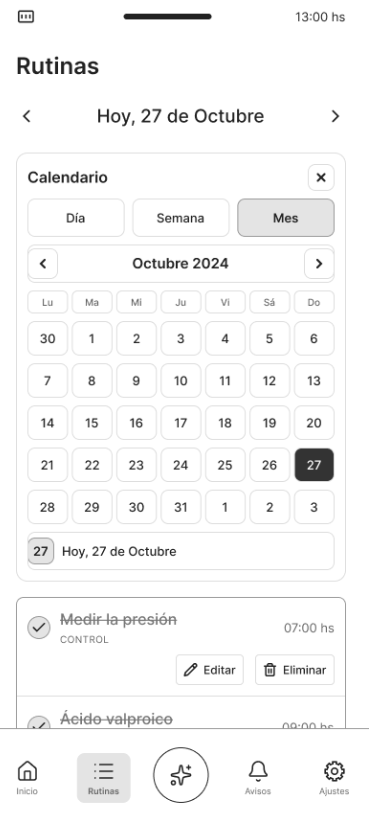
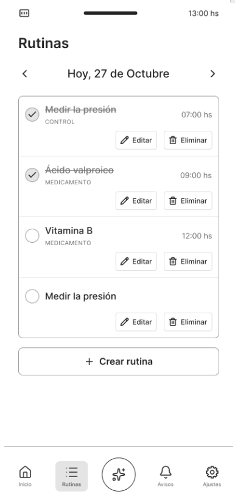
Interacción Hombre-Máquina · Séptimo semestre
Te ayudamos a cuidar a quienes más importan. Aplicación de rutinas y seguimiento para el cuidado integral de tus seres queridos.
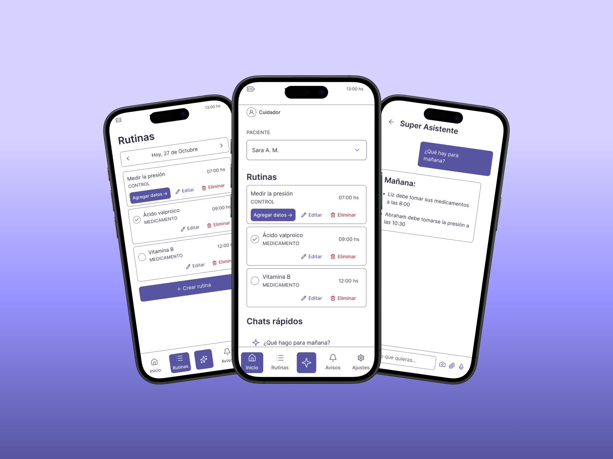
El usuario identificado es una persona que tiene la tarea de cuidar a un familiar cercano que requiere necesidades médicas, físicas o terapéuticas y que le impiden cuidarse por su cuenta. Muchas personas temen no encontrar a alguien adecuado para dejar a cargo de su familiar y, si lo encuentran, siguen con ansiedad sobre si esa persona podrá cubrir sus necesidades de cuidado.
Usamos encuestas y entrevistas. Como no fue posible encontrar muchos cuidadores activos disponibles, recolectamos datos de dos grupos:
Los datos se clasificaron por grupo al analizarlos y se combinaron en los diagramas de afinidad y en las etapas posteriores. Usamos herramientas de IA en la codificación inductiva y en los diagramas de afinidad, según las guías de análisis de datos, para agrupar los datos por problemática.
El análisis revela hallazgos clave sobre el rol del cuidador, sus barreras para delegar y la distancia entre lo que se espera y la práctica diaria.
| Fuente | Hallazgo | Dato |
|---|---|---|
| Encuesta, cuidadores reales | Lo que más les aliviaría: una persona de apoyo extra para el cuidado físico | 11 de 20 |
| Encuesta, cuidadores reales | Dificultad alta (4 y 5) para encontrar bloques de tiempo en la agenda | 9 de 20 |
| Encuesta, cuidadores reales | Reorganizan su propio horario como primera acción (sueño, tiempo libre o permisos) | 9 de 20 |
| Encuesta, cuidadores reales | Piden ayuda a un familiar, vecino o amigo al delegar | 9 de 20 |
| Encuesta, cuidadores reales | El costo económico es la principal dificultad para delegar | 7 de 20 |
| Encuesta, cuidadores reales | No delegan por confianza o decisión propia (3 prefieren hacerlo ellos y 2 no confían) | 5 de 20 |
| Encuesta, hipotética | Lo que más les aliviaría: saber a distancia que las rutinas y cuidados médicos se cumplen | 14 de 25 |
| Encuesta, hipotética | Pedirían ayuda a un familiar, vecino o amigo si sus obligaciones chocan con el cuidado | 12 de 25 |
| Encuesta, hipotética | Usarían métodos escritos (notas, listas digitales, mensajes) para transmitir rutinas | 17 de 25 |
| Entrevistas | El rol de cuidador conlleva desgaste psicológico, necesidad de descanso o sacrificio de tiempo libre y vida social | 5 de 5 |
| Entrevistas | Se apoyarían principalmente en su círculo familiar íntimo por la alta confianza mutua | 4 de 5 |
| Entrevistas | Crearían listas, usarían alarmas o enviarían fotos explicativas para transmitir rutinas | 3 de 5 |
| Entrevistas | Preocupación e insatisfacción por el desempeño de cuidadores externos | 3 de 5 |
“...nadie te dice cuánto te va a afectar psicológicamente estar tan cerca del paciente y tener que fingir que estás bien para no ponerle mal a él.”
“Ya hemos llegado a contratar a cuidadoras para eso, pero nunca es fácil. Es difícil encontrar gente de confianza y con la que te sientas por lo menos un poco tranquila. (...) Nunca cumplen las expectativas.”
“Una lista de cosas si o si, con explicaciones en audios de todito por su whatsapp con foto y dibujo luego si hace falta para que sea dificil luego equivocarse y poner todo alarma y eso también para los recordatorios.”

Titular: La carga de cuidar genera un desgaste significativo en los familiares, quienes necesitan apoyo pero desconfían de delegar el cuidado a otros.
¿Qué observamos? Los cuidadores desean aliviar su carga. Encargarlo a otra persona se presenta como una solución, pero no termina de satisfacer sus necesidades ni de aliviar su ansiedad.
¿Por qué importa? Si los cuidadores no confían en sus personas de apoyo, pueden dejar de pedir ayuda y seguir cargando con responsabilidades que afectan su salud física y mental a largo plazo.
¿Qué no sabemos todavía con certeza? Si el nivel de confianza cambia cuando el cuidador es desconocido frente a cuando es un familiar o conocido.
“Y sí, siempre es cuando uno se acostumbra a estar con el familiar y es muy apegado, siempre quiere ser uno nomás. Lo que esté haciendo todo, pero a veces pues es difícil, no se puede. A veces también es un poco porque uno quiere descansar un poquito.”
“Cuando lo cuido yo misma, tengo cierta tranquilidad de saber que está bien, pero me preocupa, por ejemplo, tener que cargarlo yo sola o auxiliarlo en caso de urgencia con mi edad. Cuando lo cuida alguien más, tengo que estar igualmente pendiente de que esta persona esté haciendo un buen trabajo.”
Los familiares de personas con necesidad de cuidados constantes necesitan sentirse tranquilos al dejar a sus familiares a cargo de otras personas, debido al temor constante de que la inexperiencia del tercero ponga en riesgo la salud del paciente.
¿Cómo podríamos darle a las personas la tranquilidad de saber que sus familiares están en buenas manos?
| N.º | Requisito | Hallazgo de origen |
|---|---|---|
| RF1 | Registrar el cumplimiento de rutinas, como la toma de medicamentos. | 17 de 25 usarían métodos escritos; 14 de 25 quieren saber a distancia que se cumplen las rutinas. |
| RF2 | Notificar al cuidador cuando se realicen rutinas con un cuidador externo. | 14 de 25 quieren saber a distancia que se cumplen las rutinas; 3 de 5 se preocupan por supervisar. |
| RF3 | Permitir al cuidador externo ingresar observaciones breves (estado de ánimo, síntomas) al registrar una rutina. | 3 de 5 se preocupan por el desempeño de los cuidadores externos. |
| RF4 | Crear, modificar y eliminar eventos en la agenda diaria del paciente. | 9 de 20 tienen dificultad para encontrar bloques de tiempo; 3 de 5 usan listas y recordatorios. |
| RF5 | Vista de calendario diaria y semanal con colores para completada, pendiente y atrasada. | 9 de 20 tienen dificultad para encontrar bloques de tiempo en la agenda. |
| RF6 | Adjuntar notas, imágenes o audios cortos a las instrucciones de cada rutina. | 3 de 5 enviarían fotos explicativas o audios; 17 de 25 usarían métodos escritos. |
| RF7 | Mostrar un indicador "visto" con la hora en que el cuidador externo abrió la rutina. | 3 de 5 se preocupan por supervisar a los cuidadores externos. |

Elegimos una aplicación móvil porque era la opción más rápida de desarrollar y la más práctica para este tipo de funciones.
Se consideraron distintas interfaces. Elegimos una interfaz limpia y minimalista, guiada por una barra inferior que separa las secciones de la aplicación, con un asistente virtual basado en un chatbot de inteligencia artificial.
Usamos la paleta Índigo suave del sistema de diseño, con contraste WCAG 2.1 AA: texto normal de al menos 4,5:1 sobre blanco.
| Rol | Color | Contraste sobre blanco | Uso |
|---|---|---|---|
| Acción | #5755A1 | 6,52:1 | Acción principal. |
| Texto principal | #29283E | 14,31:1 | Datos, horarios e indicaciones. |
| Texto secundario | #575269 | 7,46:1 | Contexto y ayudas. |
| Bordes | #706B85 | 5,08:1 | Controles y tarjetas. |
| Fondo | #FFFFFF | Base blanca | Base de la interfaz. |
| Error | #B53245 | 5,99:1 | Indica qué corregir, con mensaje explícito. |
| Éxito | #287654 | 5,51:1 | Confirma lo guardado, con etiqueta clara. |
Registrar cuidado Primario: completar la tarea.
Ver historial Secundario: consultar.
Cancelar Terciario: salir sin competir.
Los botones miden 48 pt de alto, con radio de 8 pt y un solo botón primario por bloque de decisión.
Éxito · Registro guardado. El cuidado quedó registrado a las 10:30.
Error · Revisá la hora. Ingresá una hora válida en formato HH:MM.
Para cada tarea se muestran tres etapas: papel, wireframe y alta fidelidad. Después de cada tarea se explica qué cambió y por qué.
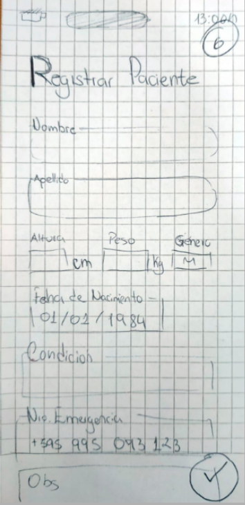
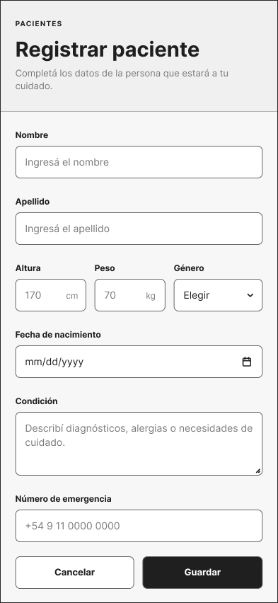
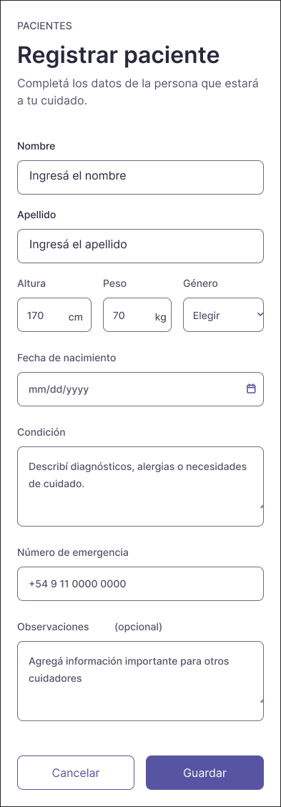
Qué cambió y por qué: En la prueba, 2 de 3 participantes no encontraron el apartado para registrar un paciente. Se agregó un botón "Nuevo Paciente" fuera del selector de pacientes (problema 4, severidad alta).


Qué cambió y por qué: El botón "Nueva Rutina" quedaba escondido y el calendario ocupaba demasiado espacio. El cambio propuesto es mantener el calendario plegado por defecto para que el botón quede a la vista (problema 1, severidad media).
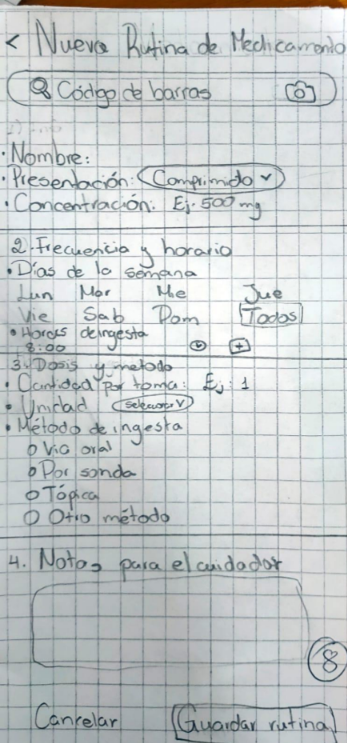
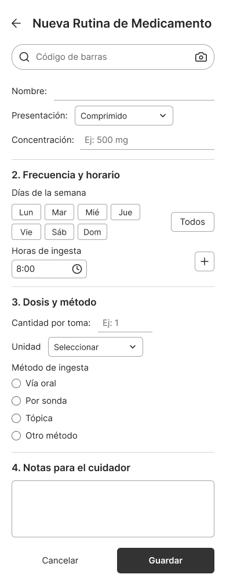
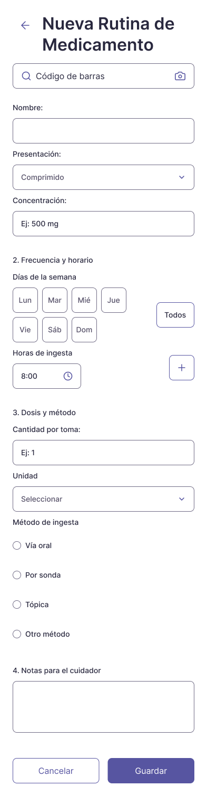
Qué cambió y por qué: La prueba no encontró errores (3 de 3 completaron, facilidad 6,3 de 7). Queda pendiente la sugerencia de un participante de calcular los horarios de toma según cada cuántas horas se toma el medicamento.
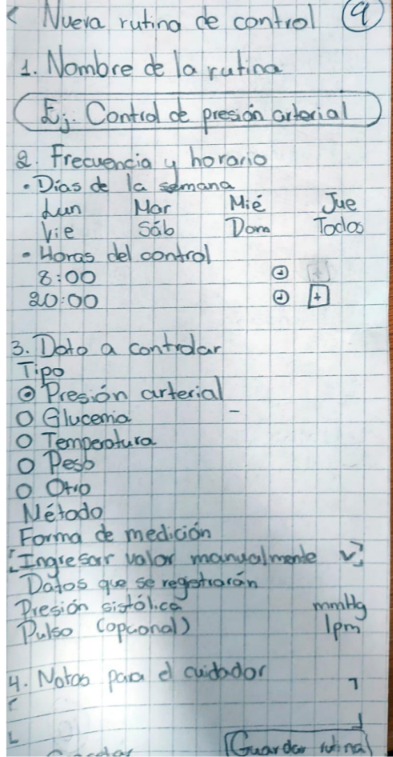
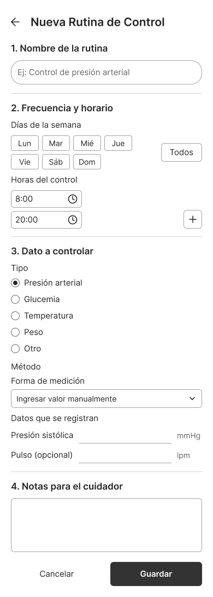
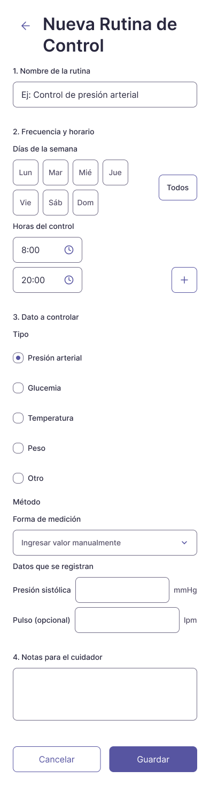
Qué cambió y por qué: Un participante no identificó que el control se agrega como una nueva rutina y exploró la aplicación para encontrarlo. El cambio propuesto es un mensaje con una flecha "Añadir medición" en las rutinas que lo requieran (problema 2, severidad baja).
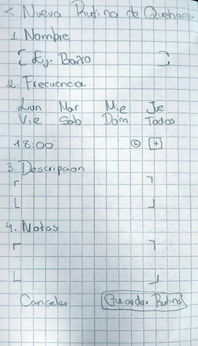
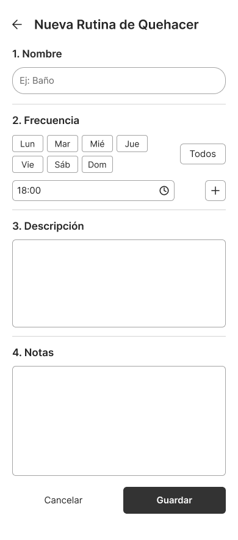
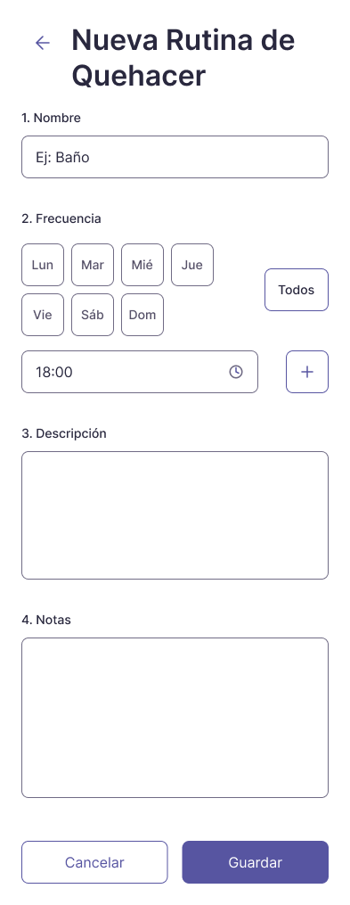
Qué cambió y por qué: Sin problemas en la prueba (3 de 3 completaron, facilidad 7 de 7). No hubo cambios.
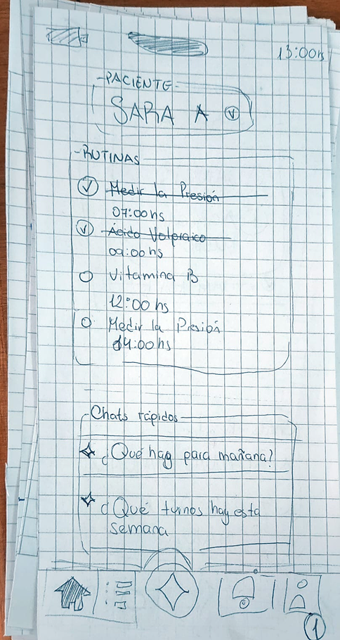
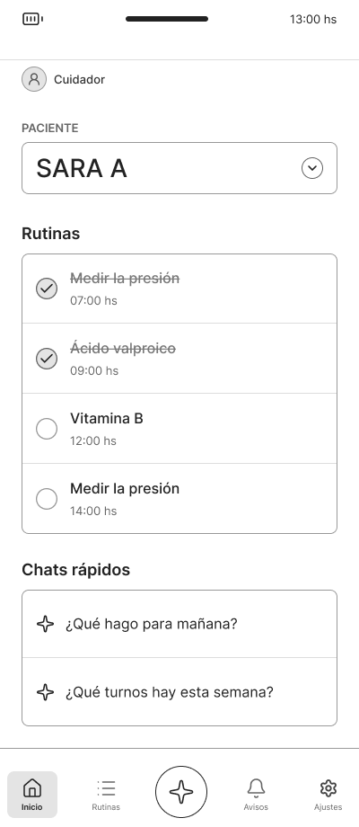
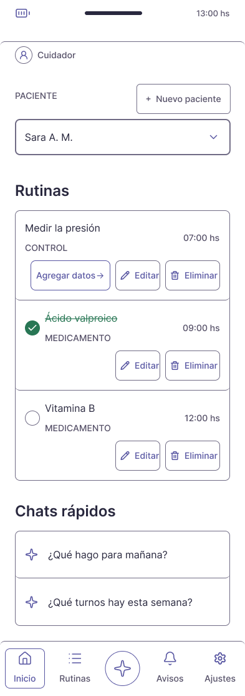
Qué cambió y por qué: Sin problemas en la prueba (3 de 3 completaron, tiempo promedio de 6,7 s). No hubo cambios.
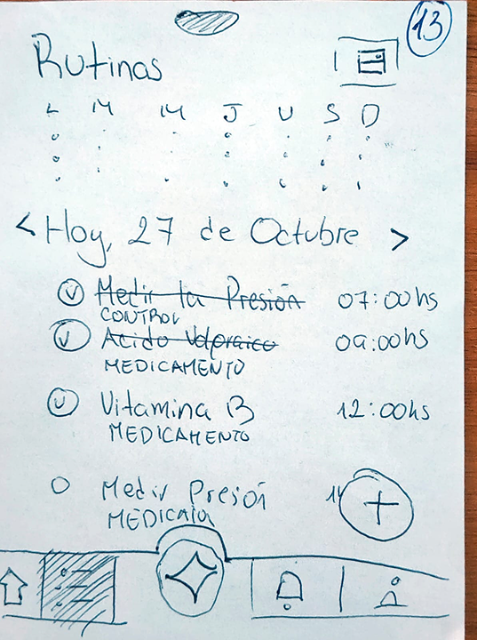
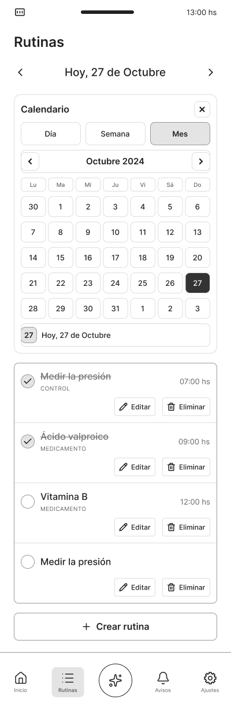
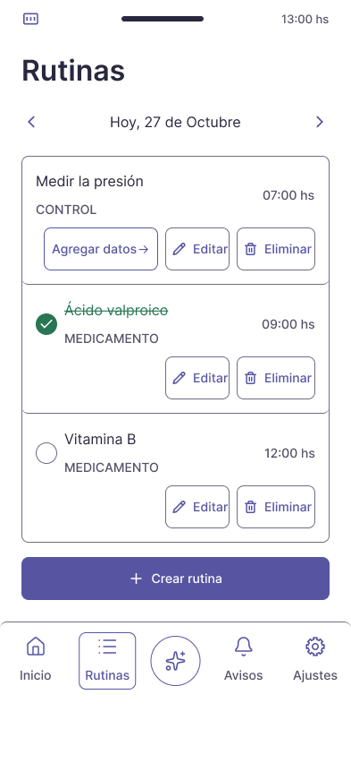
Qué cambió y por qué: El botón "+" era ambiguo. Se propuso separar las acciones en "Añadir rutina", "Registrar control" y "Añadir observación". En la prueba, 2 participantes confundieron "crear una rutina" con "marcarla como hecha", por la similitud entre "quehacer" y "rutina". Este hallazgo está pendiente de decisión.
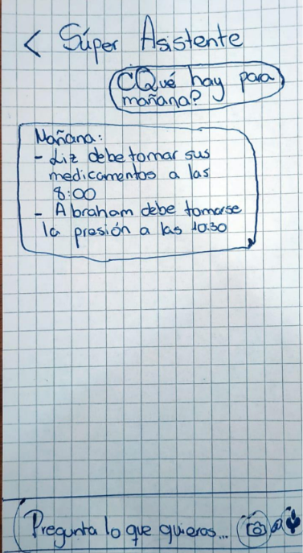
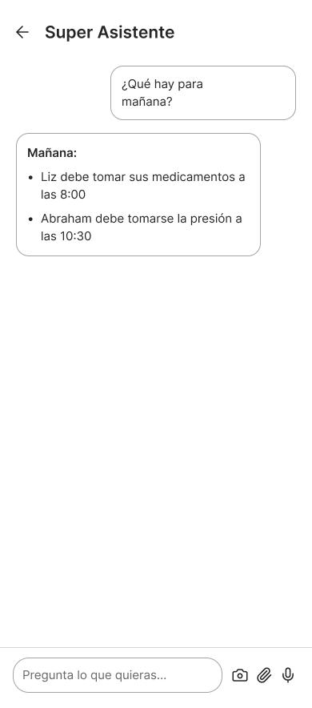
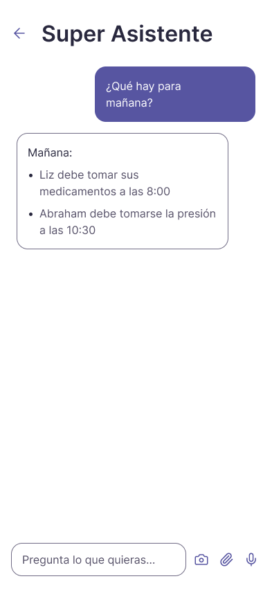
Qué cambió y por qué: Sin problemas en la prueba (3 de 3 completaron, facilidad 7 de 7). No hubo cambios.


Qué cambió y por qué: Ningún participante usó los chats rápidos precargados. Lo atribuimos a una tarea poco clara y a que el acceso directo al chat del asistente era más rápido.
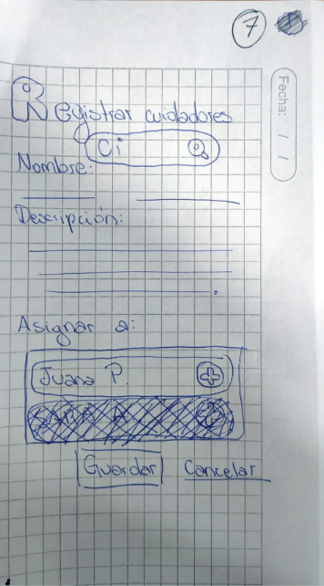
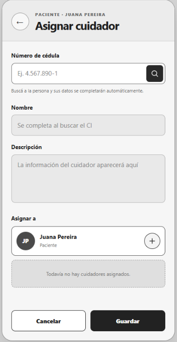
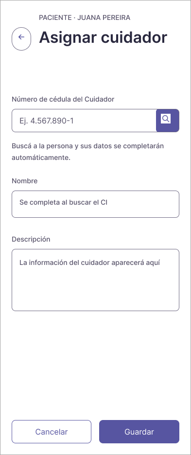
Qué cambió y por qué: Los 3 participantes confundieron al paciente con el cuidador, y no quedaba claro que la búsqueda se hace por CI. Se cambió la etiqueta a "Número de cédula del Cuidador" y se eliminó la lista de pacientes: el cuidador queda asignado al paciente seleccionado antes de entrar al menú (problema 3, severidad alta).
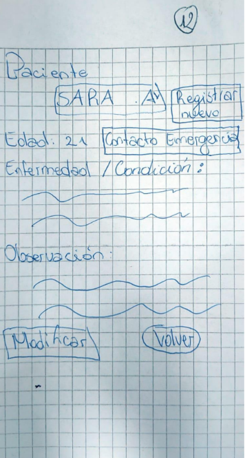
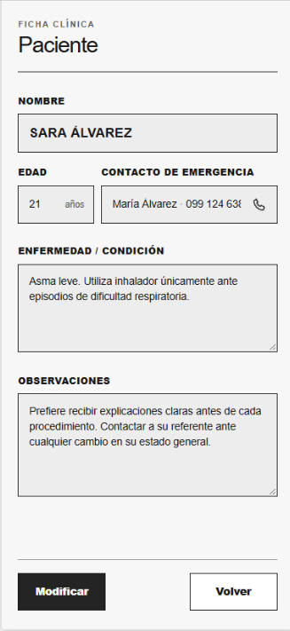
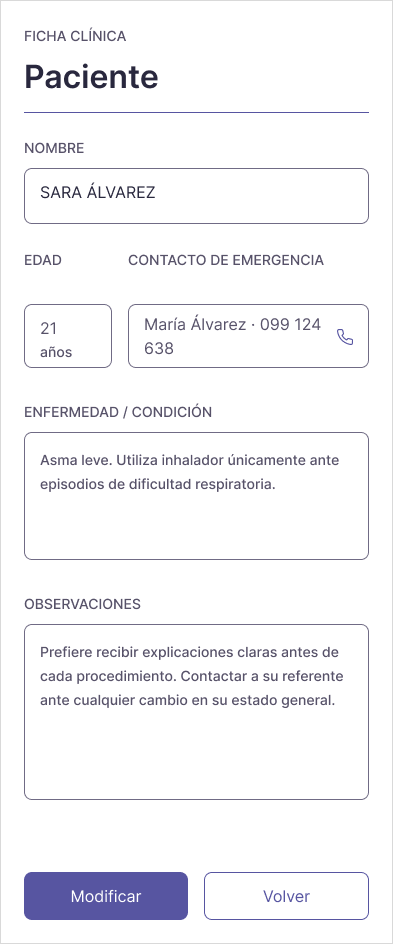
Qué cambió y por qué: Un participante preguntó cómo cambiar de paciente y no le resultó claro. Se agregó un botón "Nuevo Paciente" fuera del selector (problema 4, severidad alta).
Enlace al prototipo de alta fidelidad: pendiente de publicar.
La evaluación por inspección dejó 5 problemas predichos. La tabla compara cada predicción con lo que ocurrió en la prueba con wireframes.
| N.º | Problema predicho | Decisión del equipo | ¿Se confirmó? |
|---|---|---|---|
| 1 | Dificultad para encontrar la configuración y el acceso a "Familia". | Cambiar el ícono del menú inferior y eliminar opciones del menú. | Sí |
| 2 | No se identifica cómo modificar o eliminar rutinas existentes. | Agregar acciones visibles "Editar" y "Eliminar" con confirmación antes de eliminar. | Sí |
| 3 | Ambigüedad del botón "+" al completar rutinas. | Separar en "Añadir rutina", "Registrar control" y "Añadir observación". | No |
| 4 | Inconsistencia en los botones para guardar formularios. | Unificar la presentación y el comportamiento de guardar y cancelar. | Sí |
| 5 | Teclado numérico dibujado dentro de la interfaz. | Activar el teclado nativo del dispositivo con una etiqueta clara. | Sí |
El objetivo fue identificar los principales problemas de usabilidad. Participaron 3 personas que no conocían el producto y que no integran el equipo ni participaron en la evaluación en papel. Ninguna había tenido a su cargo a una persona que necesitara cuidados constantes.
| Participante | Perfil |
|---|---|
| P1 | 23 años. Estudiante de Ingeniería Informática y profesora de inglés. |
| P2 | 21 años. Estudiante de Ingeniería Informática. |
| P3 | 21 años. Estudiante de Ingeniería Informática con trabajo de medio tiempo. |
| Tarea | Completaron | Tiempo promedio | Errores | Pedidos de ayuda | Facilidad (1–7) | Comentario |
|---|---|---|---|---|---|---|
| T1. Registrar al paciente | 1 de 3 | 30 s (solo P2) | 2 | 2 | 2,3 | P1 y P3 no encontraron el apartado. Es la tarea más crítica. |
| T2. Definir rutinas en diferentes áreas | 3 de 3 | 71,7 s | 0 | 0 | 5,3 | Botón "Nueva Rutina" escondido y calendario grande. |
| T3. Definir rutina de medicamentos | 3 de 3 | 40 s | 0 | 0 | 6,3 | Código del medicamento confuso; pedido de horarios automáticos. |
| T4. Definir rutinas de control | 3 de 3 | 53,3 s | 1 | 1 | 6,0 | P2 no identificó que se agrega como nueva rutina. |
| T5. Definir rutinas de aseo, comida y quehaceres | 3 de 3 | 25 s | 0 | 0 | 7,0 | Sin problemas. |
| T6. Ver rutinas | 3 de 3 | 6,7 s | 0 | 0 | 7,0 | Sin problemas. |
| T7. Completar rutinas | 1 completa, 2 parciales | 21,7 s | 2 | 0 | 5,0 | Confusión entre crear y marcar rutinas. |
| T8. Consultar al Super Asistente | 3 de 3 | 18,3 s | 0 | 0 | 7,0 | Sin problemas. |
| T9. Acceder a las asistencias predefinidas | 3 de 3 | 26,7 s | 0 | 0 | 7,0 | Nadie usó los chats rápidos precargados. |
| T10. Registrar cuidadores | 3 de 3 | 56,7 s | 0 | 5 | 3,7 | Confusión entre paciente y cuidador. Es la tarea con más pedidos de ayuda. |
| T11. Administrar pacientes | 3 de 3 | 48,3 s | 0 | 1 | 6,0 | No quedó claro cómo cambiar de paciente. |
| N.º | Problema | Pantalla | Participantes (de 3) | Severidad | ¿Ya estaba? | Cambio |
|---|---|---|---|---|---|---|
| 1 | El botón "Nueva Rutina" queda escondido, el calendario ocupa demasiado espacio y no queda claro cómo cambiar de paciente. | Rutinas | 2 | Media | No | Mantener el calendario plegado por defecto. |
| 2 | No se sabe dónde cargar controles específicos, como presión o glucosa. | Rutinas e inicio | 1 | Baja | Sí | Mensaje con flecha "Añadir medición". |
| 3 | Confusión entre paciente y cuidador al registrar cuidadores, y no queda claro que el CI es el del cuidador. | Registrar cuidadores | 3 | Alta | No | Etiqueta "Número de cédula del Cuidador" y eliminar la lista de pacientes. |
| 4 | Gran dificultad para encontrar la sección para registrar pacientes. | Inicio y "Gestionar" | 3 | Alta | No | Botón "Nuevo Paciente" fuera del selector. |
Se confirmaron 4 de los 5 problemas predichos (1, 2, 4 y 5). El problema 3 (ambigüedad del botón "+") no apareció en la prueba. Aparecieron problemas nuevos: el registro de pacientes no se encontraba (T1), la confusión entre paciente y cuidador al registrar por CI (T10), la confusión entre crear y marcar rutinas (T7) y la dificultad para cambiar de paciente (T11).
Antes de corregir se guardó una copia de la versión probada. Luego se aplicaron los cambios de severidad alta (problemas 3 y 4). Esa versión corregida es la base del prototipo de alta fidelidad.
Enlace al wireframe corregido: pendiente de publicar.


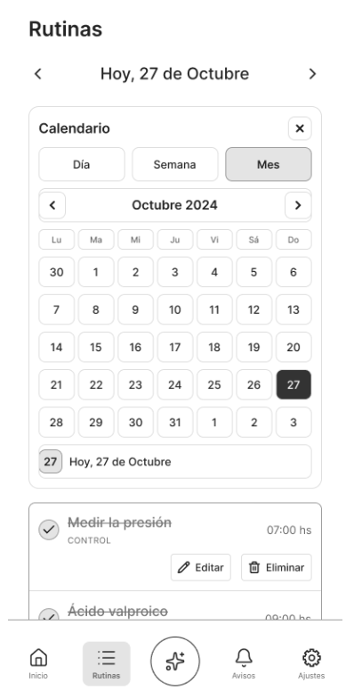
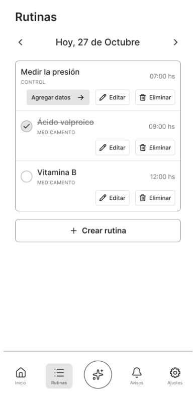
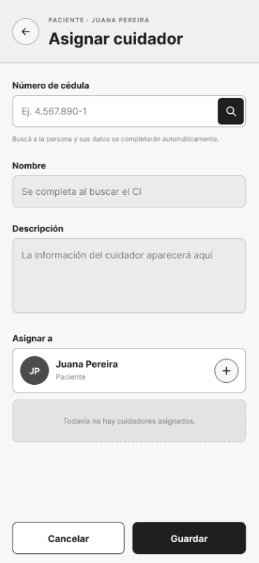
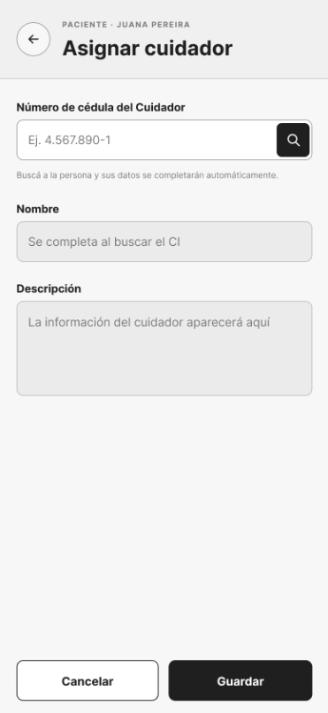
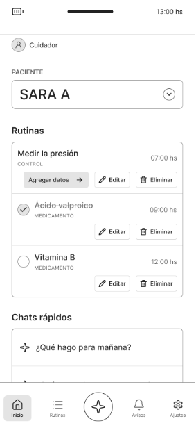
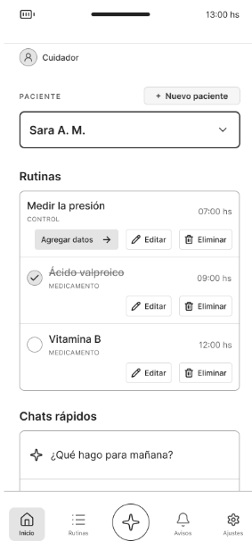
Promedio de 4 sobre 5. Los tres participantes calificaron con 4.
Se confirmaron 4 de los 5 problemas predichos en la inspección. Los problemas más graves de la prueba fueron el registro de pacientes que no se encontraba, la confusión entre paciente y cuidador al registrar por CI y la confusión entre crear y marcar rutinas. Los cambios de severidad alta (problemas 3 y 4) ya están aplicados en el wireframe corregido.
Notamos que la aplicación necesita tiempo de aprendizaje. Había opciones que para nosotros eran obvias, pero para los usuarios no. Una vez que encontraban cómo crear una rutina, volver a hacerlo o hacerlo en otra categoría les resultaba natural.
Algunas opciones estaban a un pequeño gesto de encontrarlas, y ahí nos hubiera gustado intervenir. En el mundo real no siempre vamos a poder ayudar, por eso el diseño tiene que ser claro por sí mismo.
Por eso decidimos aplicar cambios que tengan patrones claros, porque facilitan aprender nuevas tareas y responden a las dificultades que surgieron al buscar las opciones.